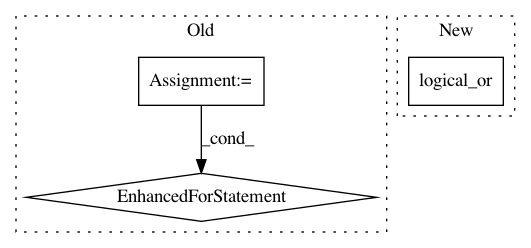

95a3314789b0b19f68b803804e2c55be067ff884,qiskit/aqua/operators/common.py,,measure_pauli_z,#Any#Any#,43
Before Change
observable = 0
tot = sum(data.values())
for key in data:
value = 1
for j in range(pauli.numberofqubits):
if ((pauli.x[j] or pauli.z[j]) and
key[pauli.numberofqubits - j - 1] == "1"):
value = -value
// print(key, data[key])
observable = observable + value * data[key] / tot
return observable
// observable = 0.0
// num_shots = sum(data.values())
After Change
observable = 0.0
num_shots = sum(data.values())
p_z_or_x = np.logical_or(pauli.z, pauli.x)
for key, value in data.items():
bitstr = np.asarray(list(key))[::-1].astype(np.bool)
// pylint: disable=no-member
sign = -1.0 if np.logical_xor.reduce(np.logical_and(bitstr, p_z_or_x)) else 1.0
In pattern: SUPERPATTERN
Frequency: 3
Non-data size: 3
Instances
Project Name: Qiskit/qiskit-aqua
Commit Name: 95a3314789b0b19f68b803804e2c55be067ff884
Time: 2019-07-22
Author: chenrich@us.ibm.com
File Name: qiskit/aqua/operators/common.py
Class Name:
Method Name: measure_pauli_z
Project Name: interactiveaudiolab/nussl
Commit Name: d882543331fd9035746cc3e4115f4ad8ac119324
Time: 2017-08-08
Author: daniel.felixkim@gmail.com
File Name: nussl/separation/duet.py
Class Name: Duet
Method Name: _compute_masks
Project Name: snorkel-team/snorkel
Commit Name: 98e6a637cf96d77e9e309c1049f52387f11e8ed7
Time: 2017-09-25
Author: rogergoldman@gmail.com
File Name: snorkel/utils.py
Class Name:
Method Name: matrix_conflicts